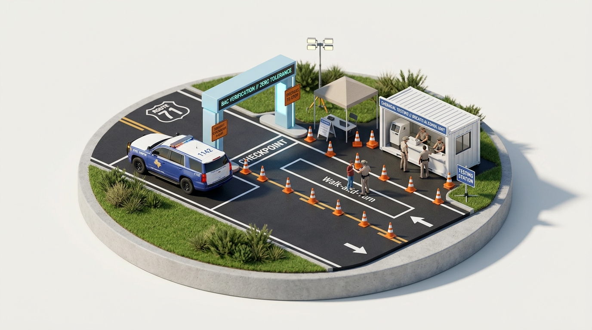

Adult Penalties — DWI & Assault
Operating a motor vehicle while intoxicated under Texas law triggers strict statutory escalation. As offenses recur or result in direct bodily trauma, classification rapidly accelerates from Class B misdemeanors to severe first-degree felonies.
“A person commits an offense if the person is intoxicated while operating a motor vehicle in a public place. Penalties escalate precipitously based upon prior convictions, open container possession, the presence of child passengers, and catastrophic bodily injury.”

The DWI Penalty Escalator
First DWI Offense
Possession of an open container increases the minimum jail time for a 1st offense to 6 days.
The presence of an open alcoholic container in the passenger area operates as a non-discretionary statutory minimum confinement trigger.
Direct Felony Elevation Factors
A DWI offense shifts out of county misdemeanor courts directly into Texas State District Criminal Courts under three specific statutory circumstances:
- 2+ PRIOR DWI CONVICTIONS 3RD DEGREE FELONY
- CHILD PASSENGER UNDER AGE 15 STATE JAIL FELONY
- INTOXICATION ASSAULT / INJURY 3RD DEGREE FELONY
- INTOXICATION MANSLAUGHTER / DEATH 2ND DEGREE FELONY
Mandatory Collateral Costs
Statutory penalties are only one portion of adult DWI accountability. Texas mandates strict civil and financial rehabilitation requirements prior to relicensure:
Statutory Knowledge Verification
Under Texas Penal Code § 49.04(c), what is the statutory impact on a driver arrested for a first-time DWI offense if they were also in possession of an open alcoholic container?